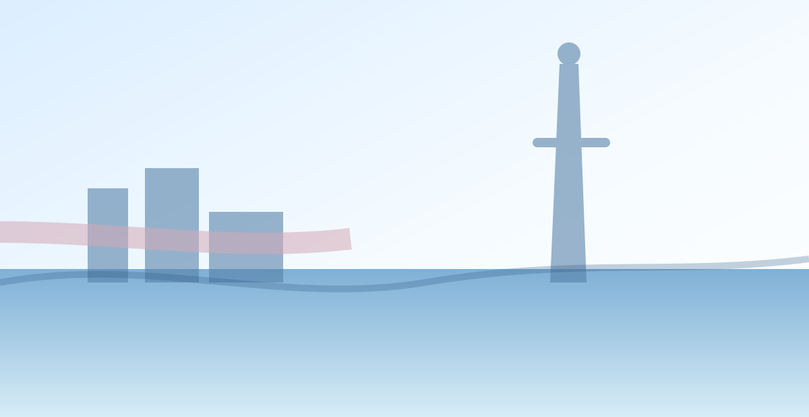

Featured Quiet Neighborhoods
Thoughtfully chosen neighborhoods for a calm, comfortable stay.


Good alternatives to busier areas

Less crowded neighborhoods with local charm, relaxing streets, and easy access to the city’s best.
Thoughtfully chosen neighborhoods for a calm, comfortable stay.